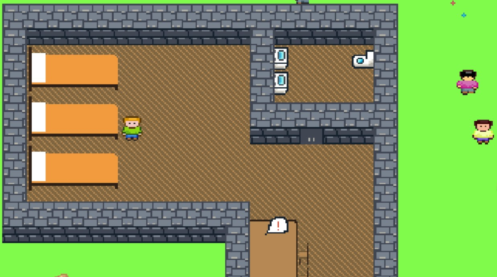

This year's ICS4U independent study project looked a little different than those of past years. We were instructed to create a "Game of Life" that involved surviving in some kind of contagion environment.
There are many groups affected by the current pandemic, and this game focuses on post-secondary school students. At the time, many universities across the country were closing their campuses indefinitely and moving classes online. Our research found that universities can be financially strained in purchasing more frequent and intensive sanitation. Students could face uncertainty about returning to classes, anxiety about the contagion, and a decline in mental health.
Throughout the course of the game's development, we collaborated on Git and Discord. These platforms allowed for version history control, easy merging of changes and reliable text and voice communication.
This game, called Periculum, uses pixel art to show a player moving around a map of a campus.
Our tile map made with Tiled, a level editor.
In the main part of the game, the player needs to find notifier icons on the map and make a choice. The choice the player makes has an immediate effect on their success indicators, the infection risk and mental stability bars. Some choices
will cause instant loss of the game due to its consequences.

The player is accompanied in its game with non-player characters, other students, dorm mates, and other on campus staff.
The player wins the game if they make it through the list of events or choices they need to make without immediately dying, a fatal infection risk or losing all their mental stability.
Check out Periculum by Bit & Byte Productions here